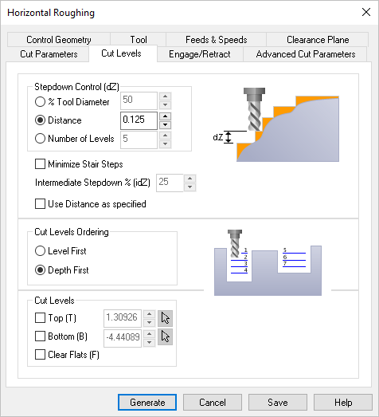

The following Cut Levels tab is displayed for the Roughing and Finishing operations listed below. In this tab, Stepdown, Cut Level and Ordering parameters can be specified. Some or all of these parameters are supported by the following operations listed below.
•Please note that some features on this dialog are only available in certain operation types and product configurations.
Adaptive Roughing, 3 Axis Roughing, 2½ Axis Horizontal Roughing, 3 Axis Horizontal Re-Roughing, 3 Axis Horizontal Finishing, 3 Axis Steeps Z (Horizontal Hill) Machining, 3 Axis Steeps Z Finishing, 3 Axis R-Level Roughing, 4 Axis R-Level Finishing, 4 Axis |
 Dialog Box: Cut Levels tab, 3 & 4 Axis Roughing Operations |
This section allows you to define the spacing between the horizontal cut levels for the roughing operation. The spacing can be specified either % Tool Diameter, a specific Distance or as the total Number of Levels desired.
|
Note: This feature is not available on all 2 Axis operations. Check this box to enable Step Minimization Roughing and then enter a value for the % (idZ) field. For example if your Stepdown Control (dZ) is set to 50% you can enable this option and enter 25% for the (idZ) field and extra cut levels will be added, similar to re-machining but with the same tool. * Please note that this feature is only available in PRO & PRE Configurations. Step Minimization Roughing
Off
On |
The actual calculated cut depth for each cut level may vary depending on the total cut depth. You can check this box to force each cut levels to be the exact value specified in this dialog beginning at the top of the cut. Only available in: •Facing, 2½ Axis •Pocketing, 2½ Axis •Profiling, 2½ Axis |
This section allows you to order the cut regions. The order of cutting can either be specified as Level First or Depth First. Level First Level First Depth First  Depth First |
This section allows you to optionally specify the top and bottom cut levels. Top (T) , 2 & 3 Axis") Top (T), 2 & 3 Axis
Top (T), 4 Axis Bottom (B) Bottom (B), 2 & 3 Axis
Bottom (B), 4 Axis Clear Flats (F) Clear Flats (F), 2 & 3 Axis
, 4 Axis") Clear Flats (F), 4 Axis |